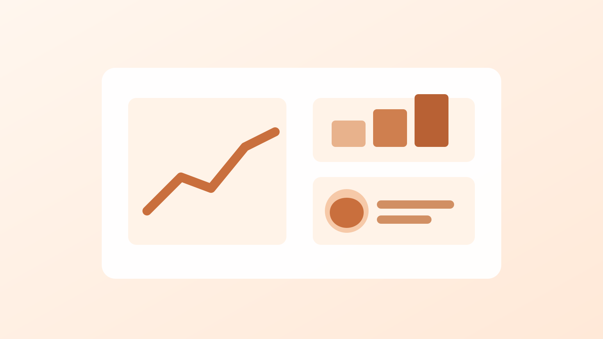

Tools
Microsoft 365 (Word, Excel, PowerPoint), Canva, Adobe Express, Audacity, basic HTML & CSS, Git & GitHub (learning)
Seattle, WA
Storyteller and data-curious.
I turn ideas into clear stories across writing, audio, and social, then use simple data to show impact.
I’m a junior Communication & Media Studies major at Cascade State University, with a minor in Data Analytics. My work sits at the intersection of creativity and clarity: writing content people actually read, producing media that feels human, and using lightweight data to understand what’s working. I’m currently looking for roles in content, communications, and community programs.
Microsoft 365 (Word, Excel, PowerPoint), Canva, Adobe Express, Audacity, basic HTML & CSS, Git & GitHub (learning)
Spreadsheets, basic charting, survey design
Copywriting, public speaking, social media strategy
English (native), Spanish (conversational)
Greenline Community Trust
Cascade State Writing Center
Foghorn Coffee
Student podcast featuring first-generation stories, with 15 episodes and 2,000+ downloads.

Analyzed two years of waste data and translated trends into practical recommendations.
Rewrote “Get Involved” content and simplified signups to increase form completions.
A growing photo-and-notes log documenting Pacific Northwest day hikes.
I’d love to connect about content, communications, and community-focused opportunities.
Founder, First-Gen Voices Podcast · Member, Campus Sustainability Club · Volunteer, Seattle Public Library reading program